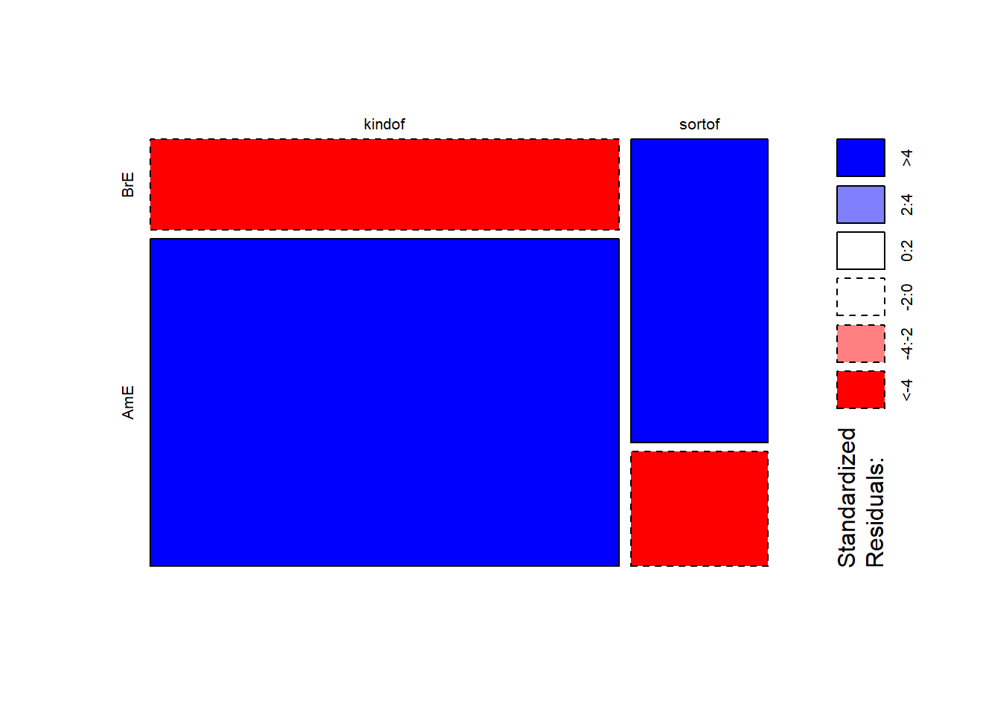

The Chi-Square Family of Tests
UQ SLC Digital Team
2019-02-20

1 (Pearsons’s) Chi-Square Test
To explore how chi-square tests (or Pearsons’s chi-square tests, chi-squared tests, or simply \(\chi\)2 tests) work, we will focus on a practical example. In this example, we will test whether speakers of American English (AmE) and speakers of British English (BrE) differ in their use of the near-synonyms sort of and kind of as in “He’s sort of stupid” and “He’s kind of stupid”. As a first step, we formulate the hypothesis that we want to test (H1) and its Nullhypothesis (H0). The Alternative- or Test Hypothesis reads:
H1: Speakers of AmE and BrE differ with respect to their preference for sort of und kind of.
while the Null Hypothesis (H0) states
H0: Speakers of AmE and BrE do not differ with respect to their preference for sort of und kind of.
The H0 claims the non-existence of something (which is the more conservative position) and in our example the non-existence of a correlation between variety of English and the use of sort of und kind of. The question now arises what has to be the case in order to reject the H0 in favour of the H1.
To answer this question, we require information about the probability of error, i.e. the probability that the H0 does indeed hold for the entire population. Before performing the chi-square test, we follow the convention that the required significance level is 5 percent. In other words, we will reject the H0 if the likelihood for the H\(_{0}\) being true is less than 5 percent given the distribution of the data. In that case, i.e. in case that the likelihood for the H0 being true is less than 5 percent, we consider the result of the chi-square test as statistically significant. This means that the observed distribution makes it very unlikely that there is no correlation between the variety of English and the use of sort of and kind of.
Let us now assume that we have performed a search for sort of and kind of in two corpora representing American and British English and that we have obtained the following frequencies:
| BrE | AmE | |
|---|---|---|
| kindof | 181 | 655 |
| sortof | 177 | 67 |
In a first step, we now have to calculate the row and column sums of our table.
| BrE | AmE | Total | |
|---|---|---|---|
| kindof | 181 | 655 | 836 |
| sortof | 177 | 67 | 244 |
| Total | 358 | 722 | 1080 |
Next, we calculate, the values that would have expected if there was no correlation between variety of English and the use of sort of and kind of. In order to get these “expected” frequencies, we apply the equation below to all cells in our table.
\(\frac{Column total*Row total}{Overall total}\)
In our example this means that for the cell with [+]BrE [+]kindof we get:
\(\frac{836*358}{1080} = \frac{299288}{1080} = 277.1185\)
For the entire table this means we get the following expected values:
| BrE | AmE | Total | |
|---|---|---|---|
| kindof | 277.11850 | 558.8815 | 836 |
| sortof | 80.88148 | 163.1185 | 244 |
| Total | 358.00000 | 722.0000 | 1080 |
In a next step, we calculate the contribution of each cell to the overall \(\chi\)2 value (\(\chi\)2 contribution). To get \(\chi\)2 contribution for each cell, we apply the equation below to each cell.
\(\frac{(observed – expected)^{2}}{expected}\)
In our example this means that for the cell with [+]BrE [+]kindof we get:
\(\frac{(181 – 277.1185)^{2}}{277.1185} = \frac{-96.1185^{2}}{277.1185} = \frac{9238.766}{277.1185} = 33.33868\)
For the entire table this means we get the following \(\chi^{2}\) values:
| BrE | AmE | Total | |
|---|---|---|---|
| kindof | 33.33869 | 16.53082 | 49.86951 |
| sortof | 114.22602 | 56.63839 | 170.86440 |
| Total | 147.56470 | 73.16921 | 220.73390 |
The sum of \(\chi\)2 contributions in our example is 220.7339. To see if this value is statistically significant, we need to calculate the degrees of freedom because the \(\chi\) distribution differs across degrees of freedom. Degrees of freedom are calculated according to the equation below.
\(DF = (rows -1) * (columns – 1) = (2-1) * (2-1) = 1 * 1 = 1\)
In a last step, we check whether the \(\chi\)2 value that we have calculated is higher than a critical value (in which case the correlation in our table is significant). Degrees of freedom are relevant here because the critical values are dependent upon the degrees of freedom: the more degrees of freedom, the higher the critical value, i.e. the harder it is to breach the level of significance.
Since there is only 1 degree of freedom in our case, we need to consider only the first column in the table of critical values below.
| DF | p<.05 | p<.01 | p<.001 |
|---|---|---|---|
| 1 | 3.84 | 6.64 | 10.83 |
| 2 | 5.99 | 9.21 | 13.82 |
| 3 | 7.82 | 11.35 | 16.27 |
| 4 | 9.49 | 13.28 | 18.47 |
| 5 | 11.07 | 15.09 | 20.52 |
Since the \(\chi\)2 value that we have calculated is much higher than the critical value provided for p<.05, we can reject the H0 and may now claim that speakers of AmE and BrE differ with respect to their preference for sort of und kind of.
Before we summarize the results, we will calculate the effect size which is a measure for how strong the correlations are.
1.0.1 Effect Sizes in Chi-Square
Effect sizes are important because they correlations may be highly significant but the effect between variables can be extremely weak. The effect size is therefore a measure how strong the correlation or the explanatory and predictive power between variables is.
The effect size measure for \(\chi\)2 tests can be either the \(\phi\)-coefficient (phi-coefficient) or Cramer’s \(\phi\) (Cramer’s phi). The \(\phi\)-coefficient is used when dealing with 2x2 tables while Cramer’s \(\phi\) is used when dealing with tables with more than 4 cells. The \(\phi\) coefficient can be calculated by using the equation below (N = overall sample size).
\(\phi = \sqrt{\frac{\chi^{2}}{N}}\)
In our case, this means:
\(\phi = \sqrt{\frac{220.7339}{1080}} = \sqrt{0.2043832} = 0.4520876\)
The \(\phi\) coefficient varies between 0 (no effect) and 1 (perfect correlation). For the division into weak, moderate and strong effects one can follow the division for \(\omega\) (small omega), so that with values beginning with .1 represent weak, values between 0.3 and .5 represent moderate and values above .5 represent strong effects (Bühner and Ziegler 2009, 266). So, in this example we are dealing with a medium-sized effect/correlation.
1.0.2 Chi-Square in R
Before we summarize the results, we will see how to perform a chi-square test in R. In addition to what we have done above, we will also visualize the data. To begin with, we will have a look at the data set (which is the same data we have used above).
chidata # inspect data## BrE AmE
## kindof 181 655
## sortof 177 67We will now visualize the data with an association. Bars above the dashed line indicate that a feature combination occurs more frequently than expected by chance. The width of the bars indicates the frequency of the feature combination.

The fact that the bars are distributed complimentarily (top left red and below bar; top right black above bar; bottom left black above bar; bottom right red below bar) indicates that the use of “sort of” and “kind of” differs across AmE and BrE. We will check whether the mosaic plot confirms this impression.
mosaicplot(chidata, shade = TRUE, type = "pearson", main = "") # mosaic plot
The colour contrasts in the mosaic plot substantiate the impression that the two varieties of English differ significantly. To ascertain whether the differences are statistically significant, we can now apply the chi-square test.
chisq.test(chidata, corr = F) # perform chi square test##
## Pearson's Chi-squared test
##
## data: chidata
## X-squared = 220.73, df = 1, p-value < 2.2e-16The results reported by R are identical to the results we derived by hand and confirm that BrE and AmE differ significantly in their use of “sort of” and “kind of”. In a next step, we calculate the effect size.
# calculate effect size
sqrt(chisq.test(chidata, corr = F)$statistic / sum(chidata) * (min(dim(chidata))-1))## X-squared
## 0.4520877The phi coefficient of .45 shows that variety of English correlates moderately with the use of “sort of” and “kind of”. We will now summarize the results.
1.0.3 Summarizing Chi-Square Results
The results of our analysis can be summarised as follows: A \(\chi\)2-test confirms a highly significant correlation of moderate size between the variety of English and the use of the near-synonymous hedges sort of and kind of (\(\chi\)2 = 220.73, df = 1, p < .001***, \(\phi\) = .452).
1.0.4 Requirements of Chi-Square
Chi-square tests depend on certain requirements that, if violated, negatively affect the reliability of the results of the test. To provide reliable results, 80 percent of cells in a table to which the chi-square test is applied have to have expected values of 5 or higher and at most 20 percent of expected values can be smaller than 5 (see Bortz, Lienert, and Boehnke 1990, 98). In addition, none of the expected values can be smaller than 1 (see Bortz, Lienert, and Boehnke 1990, 136) because then, the estimation, which relies on the \(\chi\)2-distribution, becomes too imprecise to allow meaningful inferences (Cochran 1954).
If these requirements are violated, then the Fisher’s Exact Test is more reliable and offers the additional advantage that these tests can also be applied to data that represent very small sample sizes. When applying the Fisher’s Exact Test, the probabilities for all possible outcomes are calculated and the summed probability for the observed or more extreme results are determined. If this sum of probabilities exceeds five percent, then the result is deemed statistically significant.
1.1 Extensions of Chi-Square
In the following, we will have a look at tests and methods that can be used if the requirements for ordinary (Pearson’s) chi-square tests are violated and their use would be inappropriate
1.1.1 The Yates-Correction
If all requirements for ordinary chi-square tests are acceptable and only the sample size is the issue, then applying a so-called Yates-correction may be appropriate. This type of correction is applied in cases where the overall sample size lies in-between 60 and 15 cases ((Bortz, Lienert, and Boehnke 1990) 91). The difference between the ordinary chi-square and a Yates-corrected chi-square lies in the fact that the Yates-corrected chi-square is calculated according to the equation below.
\(\frac{(|observed – expected|-0.5)^{2}}{expected}\)
According to this formula, we would get the values shown below rather than the values tabulated above. It is important to note here that this is only a demonstration because a Yates-Correction would actually be inappropriate as our sample size exceeds 60 cases.
| Variant | BrE | AmE | Total |
|---|---|---|---|
| kind of | 32.9927 | 113.0407 | 146.0335 |
| sort of | 16.3593 | 56.0507 | 72.41 |
| Total | 49.352 | 169.0914 | 218.4434 |
If the Yates-correction were applied, then this results in a slightly lower \(\chi\)2-value and thus in more conservative results compared with the traditional test according to Pearson.
1.1.2 Chi-Square within 2*k Tables
Although the \(\chi\)2-test is widely used, it is often used inappropriately. This is especially the case when chi-square tests are applied to data representing tables with more than two rows and more than two columns. It is important to note that applying the common Pearson’s’ chi-square test to sub-tables of a larger table is inappropriate because, in such cases, a modified variant of Pearson’s’ chi-square test is warranted. We will go through two examples that represent different scenarios where we are dealing with subsamples of larger tables and a modified version of the \(\chi\)2-test should be used rather than Pearson’s’ chi-square.
In this first example, we are dealing with a table consisting of two columns and multiple rows, a so-called 2*k table (two-by-k table). In order to test if a feature combination, that is represented by a row in the 2*k table, is significantly more common compared with other feature combinations, we need to implement the \(\chi\)2-equation from (Bortz, Lienert, and Boehnke 1990, 126–27).
In this example, we want to find out whether soft and hard X-rays differ in their effect on grasshopper larva. The question is whether the larva reach or do not reach a certain life cycle depending on whether they are exposed to soft X-rays, hard X-rays, light, or beta rays. The data for this example is provided below.
| Mitosis not reached | Mitosis reached | Total | |
|---|---|---|---|
| X-ray soft | 21 | 14 | 35 |
| X-ray hard | 18 | 13 | 31 |
| Beta-rays | 24 | 12 | 36 |
| Light | 13 | 30 | 43 |
| Total | 76 | 69 | 145 |
If we would apply an ordinary chi-square test, we would ignore that all data were collected together and using only a subsample would ignore the data set of which the subsample is part of. In other words, the subsample is not independent from the other data (as it represents a subsection of the whole data set). However, for exemplary reasons, we will apply an ordinary chi-square test first and then compare its results to results provided by the correct version of the chi-square test. In a first step, we create a table with all the data.
# create tdata
wholetable <- matrix(c(21, 14, 18, 13, 24, 12, 13, 30), byrow = T, nrow = 4)
colnames(wholetable) <- c("reached", "notreached") # add column names
rownames(wholetable) <- c("rsoft", "rhard", "beta", "light") # add row names
wholetable # inspect data## reached notreached
## rsoft 21 14
## rhard 18 13
## beta 24 12
## light 13 30Now, we extract the subsample from the data.
subtable <- wholetable[1:2,] # extract subtable
subtable # inspect subtable## reached notreached
## rsoft 21 14
## rhard 18 13Next, we apply the ordinary chi-square test to the subsample.
# simple x2-test
chisq.test(subtable, corr = F)##
## Pearson's Chi-squared test
##
## data: subtable
## X-squared = 0.025476, df = 1, p-value = 0.8732Finally, we perform the correct chi-square test.
# load function for correct chi-square
source("rscripts/x2.2k.r")
x2.2k(wholetable, 1, 2)## $Description
## [1] "rsoft against rhard by reached vs notreached"
##
## $`Chi-Squared`
## [1] 0.025
##
## $df
## [1] 1
##
## $`p-value`
## [1] 0.8744
##
## $Phi
## [1] 0.013
##
## $Report
## [1] "Conclusion: the null hypothesis cannot be rejected! Results are not significant!"Below is a table comparing the results of the two chi-square tests.
library(knitr)
critval <- matrix(c("chi-squared", 0.0255, 0.025, "p-value", 0.8732, 0.8744), ncol = 3, byrow = T)
# add column names
colnames(critval) <- c("", "chi-square" , "chi-square in 2*k-tables")
kable(critval, caption = "Table adapted from Bortz (1990: 126)")| chi-square | chi-square in 2*k-tables | |
|---|---|---|
| chi-squared | 0.0255 | 0.025 |
| p-value | 0.8732 | 0.8744 |
The comparison shows that, in this example, the results of the two tests are very similar but this may not always be the case.
1.1.3 Chi-Square within z*k Tables
Another application in which the \(\chi\)2 test is often applied incorrectly is when ordinary Parsons’s \(\chi\)2 tests are used to test portions of tables with more than two rows and more than two columns, that is z*k tables (z: row, k: column). An example is discussed by Gries (2014) who also wrote the R Script for the correct version of the \(\chi\)2 test.
Let’s first load the data discussed in the example of Gries (2014) 9. The example deals with metaphors across registers. Based on a larger table, a \(\chi\)2 confirmed that registers differ with respect to the frequency of EMOTION metaphors. The more refined question is whether the use of the metaphors EMOTION IS LIGHT and EMOTION IS A FORCE OF NATURE differs between spoken conversation and fiction.
# create table
wholetable <- matrix(c(8, 31, 44, 36, 5, 14, 25, 38, 4, 22, 17, 12, 8, 11, 16, 24), ncol=4)
attr(wholetable, "dimnames")<-list(Register=c("acad", "spoken", "fiction", "new"),
Metaphor = c("Heated fluid", "Light", "NatForce", "Other"))Based on the table above, we can extract the following subtable.
| Register | Heated fluid | Light | NatForce | Other |
|---|---|---|---|---|
| acad | 8 | 5 | 4 | 8 |
| spoken | 31 | 14 | 22 | 11 |
| fiction | 44 | 25 | 17 | 16 |
| new | 36 | 38 | 12 | 24 |
If we used an ordinary Pearson’s \(\chi\)2 test (the use of which would be inappropriate here), it would reveal that spoken conversations do not differ significantly from fiction in their use of EMOTION IS LIGHT and EMOTION IS A FORCE OF NATURE (\(\chi\)2=3.3016, df=1, p=.069, \(\phi\)=.2057).
# create table
subtable <- matrix(c(14, 25, 22, 17), ncol=2)
chisq.results <- chisq.test(subtable, correct=FALSE) # WRONG!
phi.coefficient = sqrt(chisq.results$statistic / sum(subtable) * (min(dim(subtable))-1))
chisq.results##
## Pearson's Chi-squared test
##
## data: subtable
## X-squared = 3.3016, df = 1, p-value = 0.06921phi.coefficient## X-squared
## 0.2057378The correct analysis takes into account that it is a subtable that is not independent of the overall table. This means that the correct analysis should take into account the total number of cases, as well as the row and column totals (vgl. Bortz, Lienert, and Boehnke 1990, 144–48).
In order to perform the correct analysis, we must either implement the equation proposed in Bortz, Lienert, and Boehnke (1990) 144-148 or read in the function written by Gries (2014) and apply it to the subtable.
# load function for chi square test for subtables
source("rscripts/sub.table.r")
# apply test
results <- sub.table(wholetable, 2:3, 2:3, out="short")
# inspect results
results## $`Whole table`
## Metaphor
## Register Heated fluid Light NatForce Other Sum
## acad 8 5 4 8 25
## spoken 31 14 22 11 78
## fiction 44 25 17 16 102
## new 36 38 12 24 110
## Sum 119 82 55 59 315
##
## $`Sub-table`
## Metaphor
## Register Light NatForce Sum
## spoken 14 22 36
## fiction 25 17 42
## Sum 39 39 78
##
## $`Chi-square tests`
## Chi-square Df p-value
## Cells of sub-table to whole table 7.2682190 3 0.06382273
## Rows (within sub-table) 0.2526975 1 0.61518204
## Columns (within sub-table) 3.1519956 1 0.07583417
## Contingency (within sub-table) 3.8635259 1 0.04934652The results show that the difference is, in fact, statistically significant (\(\chi^{2}\)=3.864, df=1, p=.049*).
1.1.4 Chi-Square Exercises
- Imagine you are interested in whether older or younger speakers tend to refer to themselves linguistically. The underlying hypothesis is that - contrary to common belief - older people are more narcissistic compared with younger people. Given this research question, perform a chi-square test and summarize the results on the data below.
| 1SGPN | PN without 1SG | Total | |
|---|---|---|---|
| Young | 61 | 43 | 104 |
| Old | 42 | 36 | 78 |
| Total | 103 | 79 | 182 |
- Imagine you are interested in whether young men or young women exhibit a preference for the word whatever because you have made the unsystematic, anecdotal observation that young men use this word more frequently than young women. Given this research question, perform a chi-square test and summarize the results on the data below.
| YoungMales | YoungFemales | Total | |
|---|---|---|---|
| whatever | 17 | 55 | 71 |
| other words | 345128 | 916552 | 1261680 |
| Total | 345145 | 916607 | 1261752 |
- Find a partner and discuss the relationship between significance and effect size. Then, go and find another partner and discuss problems that may arise when testing the frequency of certain words compared with the overall frequency of words in a corpus.
1.2 (Hierarchical) Configural Frequency Analysis
Work in progress
1.2.1 Configural Frequency Analysis (CFA)
Work in progress
1.2.2 Hierarchical Configural Frequency Analysis (HCFA)
Work in progress
References
Bortz, J, GA Lienert, and K Boehnke. 1990. Verteilungsfreie Methoden in Der Biostatistik. Berlin: Springer Verlag.
Bühner, Markus, and Matthias Ziegler. 2009. Statistik Für Psychologen Und Sozialwissenschaftler. München: Pearson Studium.
Cochran, W. G. 1954. “Some Methods for Strengthening the Common \(\chi\)^2tests.” Biometrics 10: 417–51.
Gries, Stefan Thomas. 2014. “Frequency Tables: Tests, Effect Sizes, and Explorations.” In Polysemy and Synonymy: Corpus Methods and Applications in Cognitive Linguistics., edited by Dylan Glynn and Justyna Robinson, 365–89. Amsterdam: John Benjamins.